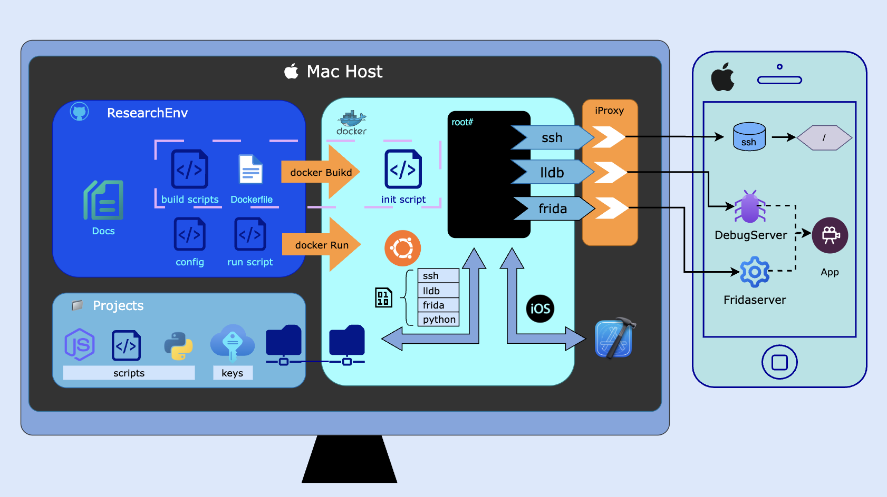

<- Back
May 30, 2025
iOS Research Docker Environment

Introduction
Hello,
In this (first) post I will be presenting a project I started in late 2024.
I was about to switch jobs, and I wanted my research environment (macOS)
to be portable so I could quickly set it up once I got my new (macOS) laptop.
This gave birth to the idea of dockerizing my environment, scripts,
and tools, uploading everything to GitHub, and then simply pull and build it on my next machine.
It took a couple of weeks of working nights, but eventually it
worked. I have also improved it since, and added scripts, features,
configurations, and improved portability.
Ideally I would have shared the entire thing, including my scripts
and tools, but licensing made that complex, so I’m sharing only the
environment-setup files, and instructions on how to add your own
scripts
From docker to scripts
My naive approach was to create a Dockerfile that installs SSH, Frida, and LLDB, add it to a repo
that contains some scripts, and port it across
machines.
If that is the case, I may as well set up a .lldbinit file that will
load my scripts, right? Also, getting the PID of my target and attaching
to the process could save the time of constantly copying and pasting Bash/LLDB commands.
And since I am scripting things, it would be a
hassle of keep entering my device password whenever I SSH. And what if I
want to switch to Frida? I also don’t want to mix the scripts from my work
projects in my personal environment repo…
So, ideally, I wanted all of these to work: a container that is portable,
configurable, minimal, easy to use, separates the environment from my projects,
as automatic and as scriptable as possible,
and flexible in case I want to switch tools, scripts, and projects. And
after making it work, share it with the world (or at least with you, in
case you are still reading)
Problems along the way
USB - a container is not able to recognize a device that is
connected via USB (at least from my research on a Mac). I needed some
other solution, which was combining iProxy with network-based communication
(i.e., Frida and LLDB remote-server style) and port sharing
and forwarding between the container, host, iproxy, and the device
Password prompts - whenever ssh-ing into the device a
password is requested. Running scripts to, for example, find the PID of
the target needs to be seamless. This was possible by sharing SSH key pairs
and known-hosts entries between the device and the container. The location of
the keys is outside of the repo and is configurable. See the docs for
ssh setup.
iOS symbols - In a regular LLDB client, the debugger looks
for the symbols in Xcode subfolders (after selecting the platform to
remote-ios). However, inside the Docker container we use a Linux build,
which does not search for that path. While LLDB has many configuration
options and environment variables, the debug symbols is not one of them (at
least with the version I was working with). This required patching one
of LLDB libraries to look for the symbols in that path, while mounting
the host Xcode's path to the container’s fake Xcode path. The fun part
about solving this was debugging LLDB with LLDB. Good times.
Ports - Since I wanted a script the “does it all”, including
setting up the ports, iproxy, and connecting to the device, I had to
make sure to kill all the previous connections that were using these
ports (from a previous run, for example). This required running netstat
to find the PID that uses the ports, killing them, setting iproxy,
using socat for packet forwarding, and everything should be done 3 times
- one set of ports for ssh, one for LLDB and one for frida.
root/rootless - When cloning the repo to the new machine for
the first time, I was also working with a newer device and the concept
of rootless Jailbreak. This required some more configuration fields like
$SSH_USER which switched from root to
mobile. Also, the location of the debugserver on the device
changed from /usr/bin/debugserver to
/var/tmp/debugserver which was implemented as
$DEBUGSERVER_PATH in the run.cfg file
Teasers
This section contains examples of what using this setup looks like once
everything is configured.
Example 1
Running
host$ ./build_and_run_docker
docker# ./debug
The first line performs the following:
- imports your configuration
- sets up the host ports, packet forwarding, and iproxy
- builds the container
- runs the container and mounting the project and scripts folders
- copies your ssh keys into the container
- sets up the patched lldb
- creates convenient aliases inside the container
The second line performs the following:
- imports your project and target-specific configuration
- finds the PID of your target using ssh (or waitfor by process name)
- starts the configured tool (lldb/frida/frida-python)
- connects to/spawns the process
- loads your custom generic scripts
- loads your target-specific script, which may start setting up hooks,
breakpoints, automatically and continue running
Example 2
Running
host$ ./build_and_run_docker
docker# myssh
The first line performs the above.
The second line connects to your
device right away (saving you from running iproxy, ssh params, password, known hosts
prompt)
Example 3
Running # myfrida [pid] connects to frida cli (saving you
iproxy, frida params, password, etc)
How to get started?
First, clone the repo and read
the README. Start with a simple task such as getting myssh
or myfrida working by configuring the ports in config.cfg.
Then, move on to more complex examples like
lldb/frida connection. Use the examples folder in the repo
Use the extra
guides in the docs of the repo